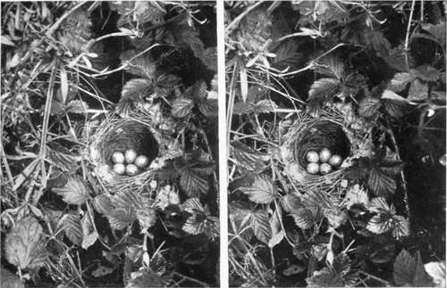

Chapter XI. How To Observe And Photograph Some Of Our Commoner Birds And Their Nests And Eggs. Part 14
Description
This section is from the book "Nature Photography For Beginners", by E. J. Bedford. Also available from Amazon: Nature Photography for Beginners.
Chapter XI. How To Observe And Photograph Some Of Our Commoner Birds And Their Nests And Eggs. Part 14
As we were prevented last week from making our contemplated excursion on account of the weather, we are now at the end of May, and to-day we ought to find some nests belonging to the later builders, including the migrants, such as the White-throat, Sedge Warbler, Blackcap, and Flycatcher. A good place to find the nests of some of these birds is amongst the thick herbage by the side of a small stream, as many birds like to build their nests near water. So I propose we commence our search to-day by starting at the keeper's cottage and then work along the bank of the small stream which commences at the pond we are already acquainted with and meanders through the meadows beyond. The grass is getting long now, so we must be careful not to trample it down, but there is a footpath along the bank of the stream and by following this we shall do no damage. At the end of May life of all kinds seems to be teeming, in both the animal and vegetable worlds, and the numbers of Birds, Insects, and Flowers appear innumerable. We find the wealth of available material for purposes of study is so great that we are almost bewildered, and have, perforce, to leave the great mass of it untouched, selecting a few subjects which specially appeal to us from the vast store at hand, and we shall have time to notice little to-day but our birds and their nests.
We are reminded, occasionally, of the multitude of the insect kingdom by a very small member of it trying to commit suicide in one of our eyes, and we are accordingly made to experience a large amount of discomfort from so tiny an object. We are specially likely to experience this unpleasant sensation when walking by the side of a stream, and I will, therefore, give you a practical hint. The little mirror you carry—I have one in my pocket too—will be very useful in enabling you to see and abstract an intruder, such as I have mentioned, from your eye, and if this is quickly and skilfully performed much of the after effects may be avoided. You are likely also to experience some discomfort from attacks by midges, especially when sitting under the shade of trees near water. The effects produced by these tiny insects are not felt immediately. Probably the next day your face and hands will experience an itching sensation, which will only be made much worse by rubbing the places. One of the best ways of stopping the itching is to rub a little weak ammonia on the part affected, being careful, of course, not to get it near the eyes. But as prevention is better than cure, you will find a fine net, such as ladies use for their hair and called a fringe net, I believe, or another kind known as a mosquito net, if put over the head will keep a good many insects away. They do not like to go through the meshes of a net even if quite large enough for them easily to do so. A small bottle of oil of lavender carried in the pocket is useful to enable you to rub a small quantity on the face or hands when the flies are specially troublesome, and will help to keep them away.
We have now arrived at our starting point; let us commence our search. The herbage is so thick that the best way of working now is to tap it gently with the walking-stick.
There goes a bird; ah! it is only a young Thrush which has been hiding in the bushes. There are so many young birds about now, which were hatched earlier in the season, and they often fly out of a bush or the herbage and lead one to think there must be a nest, so you must be on your guard against this. There goes another bird, but this time I feel certain it came off a nest. It was a Whitethroat, and is one of the commonest of our migrants and found almost everywhere. We may expect to find several nests belonging to this species to-day. Here is the nest; it is made of bents, the dead stems of Goose-grass being very often used, and is lined with hair, sometimes very sparingly, at others thickly. I remember finding one nest several years ago very thickly lined with black horse-hair, which made the eggs show up very distinctly. There is often a piece or two of wool or willow down used in the construction of the nest, which is rather loosely made, and generally one can see through it. The eggs are usually five, as in the case of the example before us, and although they vary a good deal there is a general family likeness about them. The ground is more or less of a greenish or buffish-white, and the markings usually have a green tendency, often accompanied by brown or grey spots. Another bird, called the Lesser Whitethroat, although very little less in size than the Greater Whitethroat, is found in some districts. It is much scarcer as a rule than the Common or Greater Whitethroat, and I have never found its nest in this district myself, although I have been told it has occurred. Here are the pair of birds to whom this nest belongs quite near us. They are generally of a fussy turn of mind, as you can see, and do not like their nest disturbed. You can hear their scolding and somewhat jarring note, and you must learn to recognise the various notes of the different species of birds, because they all have several kinds in addition to what is known as their song.
Fig. 14. Common Whitethroats Nest.
Continue to:
- prev: Birds And Their Nests And Eggs. Part 13
- Table of Contents
- next: Birds And Their Nests And Eggs. Part 15
Tags
nature, photography, art, birds, camera